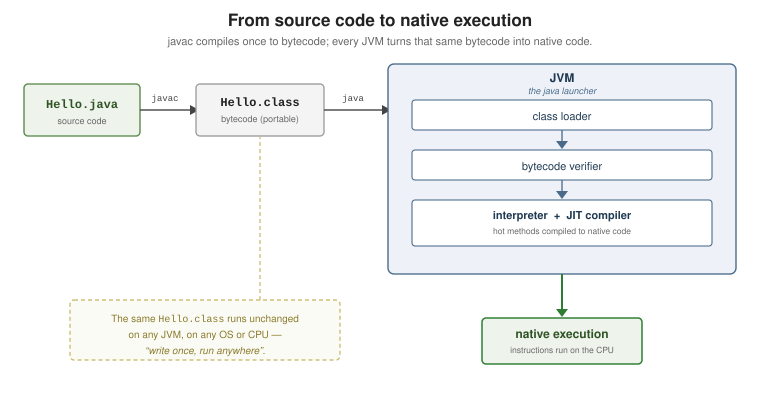

Getting Started
|
This content was generated with the assistance of AI and should be verified against the official documentation before being relied on in production. |
Java is a statically-typed, class-based, object-oriented language that compiles to platform-neutral bytecode and runs on the Java Virtual Machine (JVM). This page takes you from an empty machine to a compiled program, a REPL session, and an IDE, following dev.java "Getting Started" and the Java Tutorials "Getting Started" trail.
What Java Is
Java source is compiled by javac into .class files containing bytecode — a compact instruction
set that is not tied to any CPU. The java launcher starts a JVM, which loads that bytecode, verifies
it, then interprets and just-in-time compiles it to native instructions. Because the bytecode is
portable, the same .class file runs on any conforming JVM: write once, run anywhere.
Hello.java source code (what you write)
| javac the compiler (ships in the JDK)
v
Hello.class bytecode (portable, not native)
| java the launcher (starts a JVM)
v
JVM --> native CPU instructions
JDK = javac + java + jshell + jar + javadoc + the standard library + tools
JRE = java + the standard library only (a run-only bundle; not shipped separately since Java 11)Java is statically typed (every variable and expression has a type the compiler checks),
class-based (code lives in classes and interfaces), and has automatic memory management (a garbage
collector). Since Java 11 the JRE is no longer a separate download — you install a full JDK and, when
you only need to run an application, ship a trimmed runtime built with jlink.
Installing a JDK
Use any build of the OpenJDK sources: Oracle’s own OpenJDK or Oracle JDK builds, or a vendor build such as Eclipse Temurin from the Adoptium project. All pass the same compatibility tests; pick one and keep it current.
# macOS (Homebrew)
brew install temurin
# Debian / Ubuntu
sudo apt install openjdk-25-jdk
# Windows (winget)
winget install EclipseAdoptium.Temurin.25.JDKVerify that both the runtime and the compiler are on the PATH and report the version you expect:
$ java -version
openjdk version "25" 2025-09-16
OpenJDK Runtime Environment Temurin-25+36 (build 25+36)
OpenJDK 64-Bit Server VM Temurin-25+36 (build 25+36, mixed mode, sharing)
$ javac -version
javac 25Many tools locate the JDK through the JAVA_HOME environment variable. Point it at the JDK’s root
directory (the one containing bin/):
export JAVA_HOME="$(/usr/libexec/java_home -v 25)" # macOS
export JAVA_HOME=/usr/lib/jvm/java-25-openjdk # typical Linux path
export PATH="$JAVA_HOME/bin:$PATH"Compiling and Running
A minimal program is a class with a main method. Save it in a file whose name matches the public
class — Hello.java:
public class Hello {
public static void main(String[] args) {
System.out.println("Hello, World!");
}
}The body prints through
System.out, the
standard output stream. Compile it to bytecode, then run the class (by name, with no .class suffix):
javac Hello.java # produces Hello.class
java Hello # prints: Hello, World!The java launcher can also run a
single source file directly — it compiles the file in memory and never writes a .class. This is the
single-file source launcher, handy for scripts and experiments:
java Hello.java # compile-and-run in one stepAs of the current release line, Java also accepts a compact source file: a file with no class
declaration, whose methods and fields become members of an implicitly declared class, and an instance
main method with no String[] parameter. The bundled
java.lang.IO class
provides println, print, and readln:
// hello.java -- no class, no String[] args
void main() {
IO.println("Hello, World!");
}java hello.javaThe launcher accepts several main shapes and picks the most specific one present:
public static void main(String[] args), public static void main(), an instance void main(String[] args),
and an instance void main(). String... args is equivalent to String[] args. See
dev.java "Getting Started" for the compact-source-file rules.
JShell: The REPL
JShell is Java’s read-eval-print loop. It evaluates declarations and expressions one at a time, prints the result, and keeps state between snippets — ideal for trying an API without a project.
$ jshell
| Welcome to JShell -- Version 25
| For an introduction type: /help intro
jshell> int radius = 3
radius ==> 3
jshell> double area = Math.PI * radius * radius
area ==> 28.274333882308138
jshell> String greet(String who) { return "Hi, " + who; }
| created method greet(String)
jshell> greet("Ada")
$4 ==> "Hi, Ada"
jshell> /vars
| int radius = 3
| double area = 28.274333882308138
| String $4 = "Hi, Ada"
jshell> /methods
| String greet(String)
jshell> /exit
| Goodbye/vars and /methods list what you have defined, /imports shows the default imports, /list replays
your snippets, and /exit quits. A missing semicolon at the top level is added for you.
IDEs and the Release Cadence
Any editor works, but an IDE adds incremental compilation, a debugger, and refactoring. The common
choices — IntelliJ IDEA, Eclipse IDE,
Visual Studio Code with the
"Extension Pack for Java", and
Apache NetBeans — are all tool-agnostic here: nothing in this section depends on
a particular IDE, and every example builds with javac alone. For the full list of Java IDEs and editors with
links to their official pages, see Java IDEs & Tools.
Java ships a feature release every six months (March and September). Every sixth release is a long-term support (LTS) release — 11, 17, 21, 25 — which vendors patch for years; the releases in between are current for six months. Track what each release adds through the dev.java evolution pages.
Two compiler flags matter early on:
# compile for an older bytecode level while using a newer JDK
javac --release 21 Service.java
# a preview feature is tied to exactly one release and must be enabled at compile AND run time
javac --release 25 --enable-preview Demo.java
java --enable-preview Demo--release N makes the compiler target the API and bytecode of Java N. --enable-preview unlocks
features that are complete but still gathering feedback; preview code compiled against one release will
not run on another. Query the running version programmatically with
Runtime.Version:
jshell> Runtime.version()
$1 ==> 25+36-LTS
jshell> Runtime.version().feature()
$2 ==> 25From Source to Native Execution

The class loader finds and loads each .class on demand. The bytecode verifier rejects malformed
or type-unsafe bytecode before it ever runs. The interpreter then executes the bytecode immediately,
while the JIT compiler watches for frequently executed ("hot") methods and compiles them to native
code in the background, so a long-running program speeds up as it warms up. None of this changes the
.class file, which is why the same compiled artifact runs on every platform with a conforming JVM.
See Also
-
Lexical Structure and Style — how a source file is organised once you move past a single
Hello. -
Primitive Types and Variables — the values your first programs manipulate.
-
Build and Tooling — Maven and Gradle for anything larger than a single file.
-
Packages and Modules — organising many classes and building a trimmed runtime with
jlink.